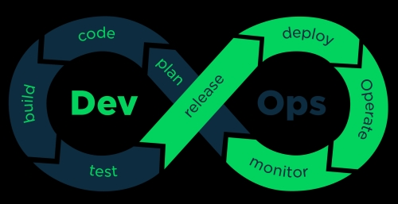
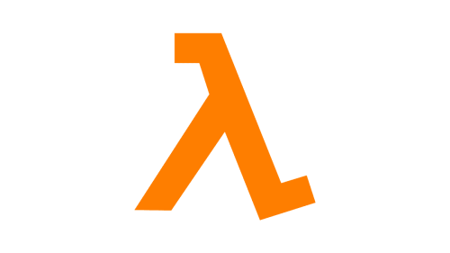
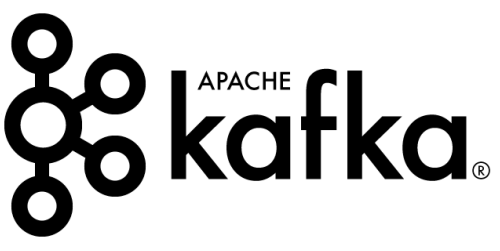
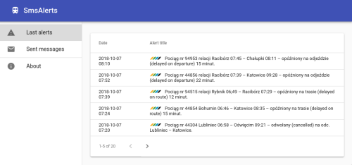

Welcome! My name is Aleksander and I am DevOps engineer. Building solutions that make everyday business better is my passion. I am always pragmatic about what I do.
About me
My projects and live demos
This Kubernetes cluster config
Single-node Kubernetes configuration for this server, where I host all my personal demos.

DevOps demos
Working deployments of popular DevOps tools.
X2go private browser
Automated Terraform + Ansible setup for private web browsing in AWS. Fully functional, secure remote desktop in minutes.

AWS Lambda image converter
Simple Java function for converting images to grayscale, complete with Gradle setup + Terraform scripts.

Kafka + Ruby video converter
Multi-service system for video file conversion, conecting Kafka, S3 and FFmpeg together.

SMS Alerts
Monitoring Silesian Railways information page and sending SMS about delayed trains. Very useful since I travel by trains a lot.
Temperature monitor
Monitoring house temperature using Raspberry Pi and cool Grafana dashboard. Useful in winter.

2048 in Linux console
Pure Groovy implementation of popular 2048 game puzzle, playable through Linux telnet.
Work Experience
DevOps & Site Reliability Engineer - EllieMae (former Capsilon) (Mar. 2019 - present)
-
Building and supporting infrastructure for running mortgage automation software, including configuration of cloud services and everyday maintenance.
-
Design and constant improvement of fully automated software release process, involving QA, versioning, deployment and monitoring.
-
Maintaining and extending automated tests infrastructure, consisting of scalable Jenkins setup, Selenium farm and custom JUnit-based testing framework. Development of internal industry-specific tools for automation.
Java Developer & DevOps - UWS Software Service (Jun. 2017 - Mar. 2019)
-
Developed backend of web application used to track employee work time. Single-handedly implemented integration with RFID attendance terminals around the world.
-
Extended and enforced industry-standard DevOps practices, including full CI/CD, log aggregation, monitoring and metrics, using popular Open Source solutions.
-
Planned and successfully performed application migration from on-premise ESXi infrastructure to cloud Kubernetes service, with minimal downtime.
Mid Software Developer & DevOps Engineer - itSilesia (Oct. 2015 - Mar. 2019)
-
Took part in creating browser-based graphical editor to speed up and automate Android apps development, including integration with external media detection webservices.
-
Implemented and took part in onsite realization of distributed field game system , using RabbitMQ and custom services running on Raspberry Pi and Windows PC fleet.
-
Developed custom CMS solution providing centralized media datastore to a set of mobile 3D apps, implemented as proprietary Wordpress plugin and backed by Grails webservice.
-
Was responsible for provisioning, monitoring and everyday maintenance of production servers and applications using Jenkins/Gitlab-CI, Icinga and standard Linux tools. Helped teams with CI/CD pipelines and automating deployments.